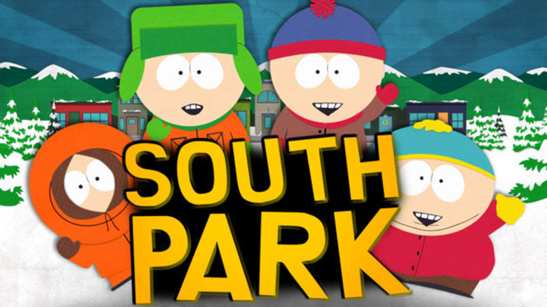

Parker and Stone developed South Park from two animated short films, both titled The Spirit of Christmas. The second short became one of the first Internet viral videos, leading to South Park's production. The pilot episode was produced using cutout animation; subsequent episodes have since used computer animation recalling the cutout technique. It debuted with great success, consistently earning the highest ratings of any basic cable program. Subsequent ratings have varied, but it remains one of Comedy Central's longest-running programs. Since the fourth season, episodes are typically written and produced during the week preceding its broadcast, with Parker serving as the primary writer and director. South Park features a large ensemble cast of recurring characters.